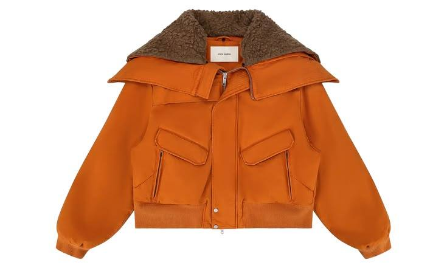
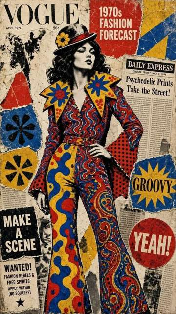
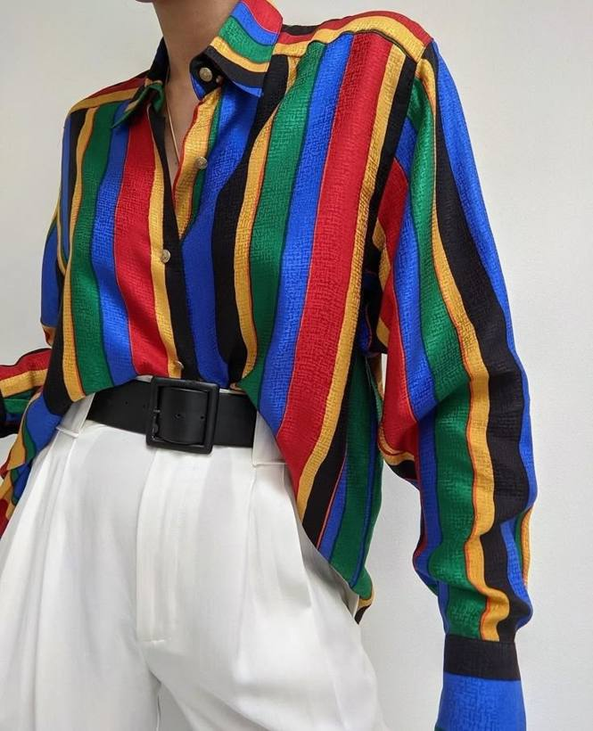
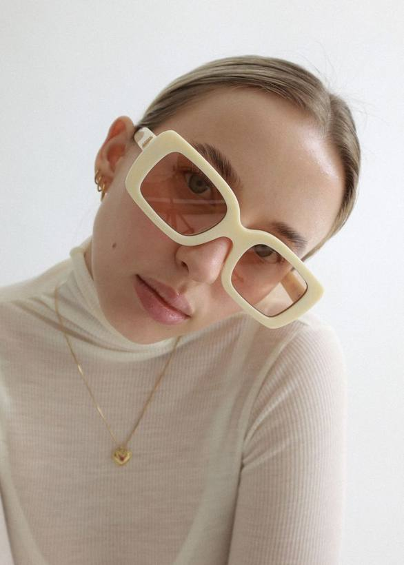
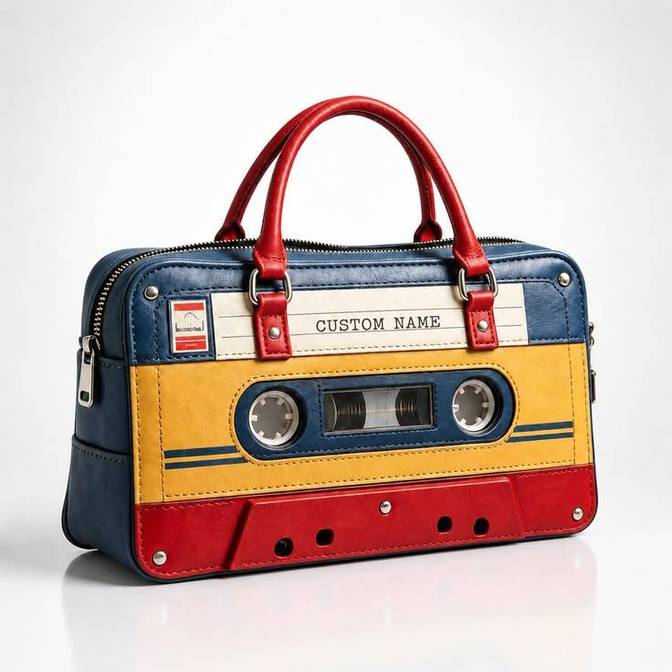
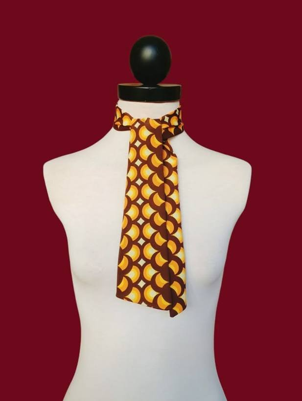
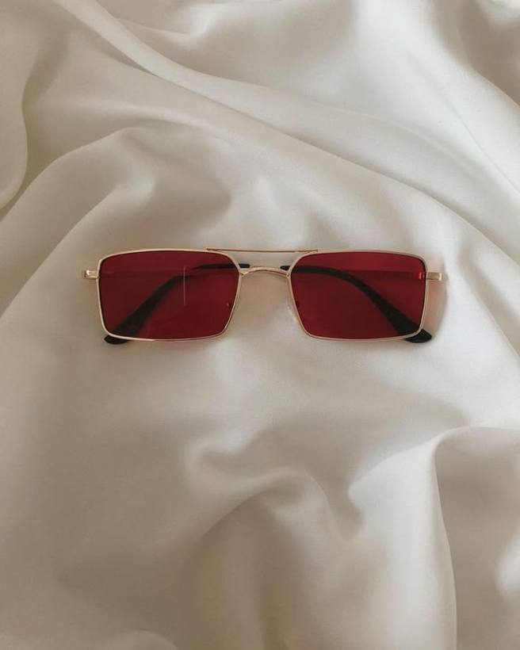
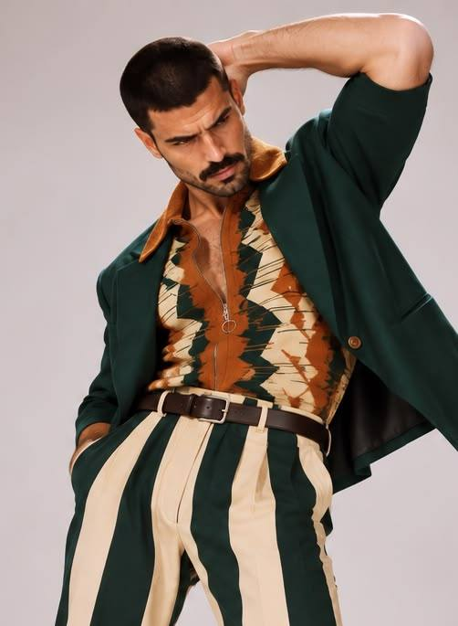
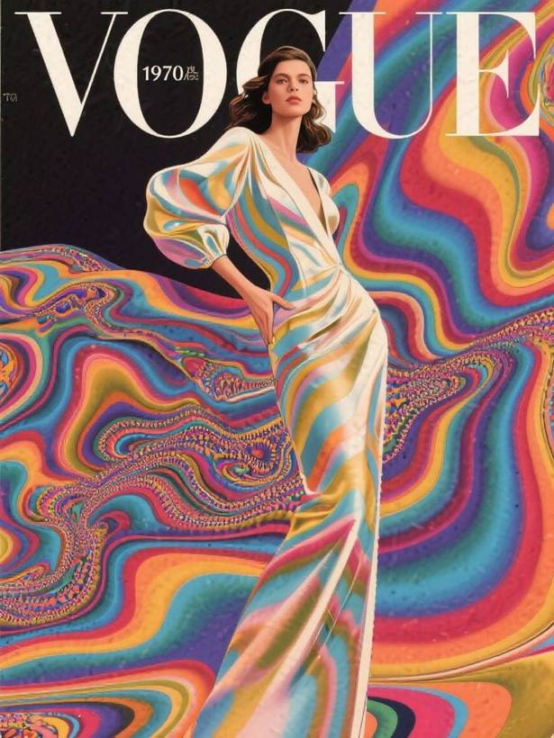

Chaqueta Bomber Retro Terracota
Corte relajado, forro suave y acabado con textura clásica. Ideal para elevar un básico en segundos.
Talla MEstado: excelente
En KROMA rescatamos siluetas, texturas y prendas retro con historia para que armes combinaciones con personalidad todos los días—sin complicarte ni disfrazarte.

Tonos tierra, pana y solapas anchas. Aire de domingo en carretera.
Cada prenda pasa por revisión de tela, costuras y caída. Además, si buscas algo puntual, nuestro servicio de Búsqueda & Curaduría Retro caza piezas según tu estilo.

Corte relajado, forro suave y acabado con textura clásica. Ideal para elevar un básico en segundos.

Algodón con caída fresca, cuello estructurado y aire desenfadado para usar abierta o fajada.

Montura cuadrada de acetato color marfil con cristales ámbar. Suman un toque suave y elegante.

Bolso de mano tipo casete en azul, mostaza y rojo, con asas rojas y cierre metálico. Un acento que no pasa desapercibido.
Boina suave en un mostaza vibrante. Funciona con cuellos altos, rayas y gafas ovaladas.

Estampado de círculos en marrón y dorados, corte ancho y caída suave. Úsala de corbata o como pañuelo al cuello.

Marco dorado fino con doble puente y lentes rojos. Look atrevido para el día o la noche.

Saco oversize verde pino y pantalón de rayas anchas crema y verde. Para pasar de la oficina a la fiesta.
Aros ovalados y ligeros en naranja intenso. Perfectos para sumar color a un cuello alto.

Cuéntanos tu talla, paleta favorita y ocasión; te preparamos una selección curada lista para reservar.
Lo que ganas al comprar con nosotros, pieza por pieza.
Cada pieza es inspeccionada a detalle para que recibas calidad real, no imitaciones descartables.
Combinaciones pensadas para que lo retro encaje con naturalidad en tu clóset actual.
Piezas únicas o de corta tirada que puedes apartar antes de que vuelen.
Te asesoramos con medidas reales y ajuste antes de confirmar tu compra.
“Pedí una camisa retro y la caída es increíble; la tela se siente firme y el empaque parecía un regalo. Ya quiero la siguiente.”Camila R.
“Me cuesta encontrar prendas vintage que me queden bien de hombros, y aquí me ayudaron con las medidas exactas. Cero dudas al comprar.”Andrés M.
“El estilo retro de KROMA tiene ese toque nostálgico pero súper usable en el día a día. Siempre recibo cumplidos cuando salgo.”Valentina G.
¿Buscas una prenda en especial, tienes dudas sobre una talla o quieres reservar una pieza? Escríbenos y te respondemos rápido.